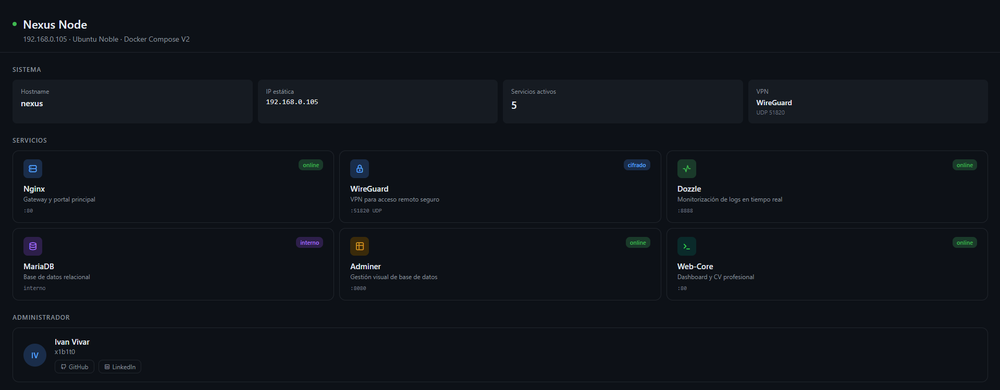

Nexus Node
Mi servidor en casa: ocho servicios en Docker Compose, una sola puerta a internet y una auditoría que me hice a mí mismo, con los fallos a la vista.
Ubuntu 24.04 sistemaDocker Compose V2 orquestaciónWireGuard acceso remoto

El panel que sirve el propio servidor en la red de casa. No está publicado en internet: esto es una captura.
Ocho servicios, un archivo
Todo el servidor está descrito en un único docker-compose.yml versionado en Git. Cada cambio queda registrado y se puede deshacer, y la configuración entera se levanta con un comando.
Los datos (base de datos, monitorización, usuarios de Dozzle) viven en ./data, fuera del repositorio.
| Servicio | Para qué sirve | Quién llega |
|---|---|---|
WireGuardlinuxserver/wireguard | VPN para administrar el servidor desde fuera de casa. | Internet, 51820/UDP |
Gatewaynginx:alpine | Punto de entrada y proxy inverso hacia el panel y Dozzle. | Red de casa, 80 |
Web-Corenginx:alpine | Sirve el panel de control que ves arriba. | Solo red de Docker |
Dozzleamir20/dozzle | Logs de todos los contenedores en directo, con usuario y contraseña. | Red de casa, 8888 |
MariaDBmariadb | Base de datos relacional del laboratorio. | Solo red de Docker |
Admineradminer | Gestión de la base de datos desde el navegador. | Red de casa, 8080 |
Uptime Kumalouislam/uptime-kuma | Comprueba que cada servicio responde y avisa si cae. | Red de casa, 3001 |
Fail2bancrazymax/fail2ban | Banea las IP que intentan entrar por SSH a la fuerza. | Red del host |
Desde fuera hay una sola puerta
Desde internet solo se llega a WireGuard. Para administrar desde fuera, primero entro en la VPN con mi clave; el resto de servicios solo existen para la red de casa, y la base de datos ni siquiera para eso.
Abierto a internetSolo red de casaSin puerto publicado
Lo audité como si fuera de otro
Cinco meses después de montarlo, abrí el repositorio buscando fallos en vez de cosas que añadir. Tardé diez minutos en encontrar tres. Cambia entre antes y después para ver qué quedaba expuesto.
3 fallos3 arreglados
- RepoLa contraseña de root de MariaDB, en texto plano en GitHub.Contraseñas en un
.envque no se sube. Contraseña antigua cambiada. - 3306MariaDB abierta a toda la red de casa.Cerrado. Solo Adminer y Uptime Kuma llegan, por dentro de Docker.
- 8888Dozzle sin login: cualquiera en la red leía los logs de todo.Dozzle pide usuario y contraseña.
- 51820WireGuard, la única puerta a internet. Sin cambios.
# docker-compose.yml, antes db: image: mariadb:latest environment: MYSQL_ROOT_PASSWORD: root_password_segura MYSQL_DATABASE: homelab_db ports: - "3306:3306" dozzle: image: amir20/dozzle:latest volumes: - /var/run/docker.sock:/var/run/docker.sock ports: - "8888:8080"
# docker-compose.yml, después db: image: mariadb:latest environment: MYSQL_ROOT_PASSWORD: ${MYSQL_ROOT_PASSWORD:?Define MYSQL_ROOT_PASSWORD en .env} MYSQL_DATABASE: homelab_db # Sin puerto publicado: solo se llega por db:3306 dozzle: image: amir20/dozzle:latest environment: - DOZZLE_AUTH_PROVIDER=simple volumes: - /var/run/docker.sock:/var/run/docker.sock:ro - ./data/dozzle:/data ports: - "8888:8080"
La contraseña en GitHub
Estaba escrita en el docker-compose.yml público. La pasé a un .env que Git ignora, con una plantilla .env.example, y Compose se niega a arrancar si falta.
Y la cambié en el servidor: borrarla del archivo no la borra del historial de Git.
Un puerto que nadie usaba
MariaDB publicaba el 3306 a toda la red, pero solo la usan Adminer y Uptime Kuma, que están en la misma red de Docker. Quité el puerto y el monitor ahora apunta a db:3306.
Logs sin candado
Dozzle lee el socket de Docker y no pedía login. Ahora usa autenticación simple, con los usuarios en un archivo fuera de Git.
Tenía Fail2ban vigilando el SSH mientras la contraseña de la base de datos estaba en GitHub. Protegía la puerta y había dejado la llave colgada fuera.
Por qué está hecho así
¿Por qué una VPN y no abrir puertos?
Una sola puerta, cifrada y con clave. WireGuard no contesta a quien no tiene una clave válida, así que desde fuera el puerto ni siquiera parece abierto.
¿Por qué Docker Compose?
El servidor entero cabe en un archivo de texto con historial. Si rompo algo, vuelvo al commit anterior; si cambio de máquina, copio el repo y el .env.
¿Por qué Fail2ban con lista blanca?
Cinco intentos fallidos en diez minutos y la IP queda baneada una hora. La red de casa y la de la VPN están en la lista blanca, para no dejarme fuera a mí mismo.
¿Por qué el login en Dozzle importa tanto?
Tener el socket de Docker es casi tener la máquina. Montarlo en solo lectura no basta, porque la API sigue aceptando órdenes; por eso la protección de verdad es que nadie entre sin contraseña.
¿Qué está automatizado?
Un playbook de Ansible crea los usuarios y prohíbe el login de root por SSH. Un script en Python lee la API de Uptime Kuma y guarda un histórico del estado de cada servicio.
¿Y la revisión del código?
Cada push pasa por GitHub Actions: valida el docker-compose.yml, revisa los scripts con ShellCheck y busca secretos con Gitleaks antes de que lleguen al repositorio público.
Levántalo en tu máquina
Hace falta Linux con Docker y el plugin de Compose. Las contraseñas no están en el repo: las pones tú en el .env.
El usuario de Dozzle para entrar es admin; el nombre que pasas con --name es solo el que se muestra.
git clone https://github.com/ivanvivartirado/nexus-node.git cd nexus-node # Contraseñas y variables (el .env no se sube a Git) cp .env.example .env nano .env # Usuario para entrar en Dozzle mkdir -p data/dozzle docker run --rm amir20/dozzle generate admin \ --password 'TU_CONTRASEÑA' --name 'Tu nombre' \ > data/dozzle/users.yml # Todo en marcha docker compose up -d docker compose ps
Lo que todavía falta
Un servidor nunca está terminado. Esto es lo siguiente de la lista, en orden.
Fijar las versiones
Las imágenes usan :latest. Fijar cada versión evita que una actualización rompa algo sin avisar.
Copias de seguridad
Volcado diario de MariaDB y copia de ./data fuera de la máquina, con una restauración probada.
Un proxy para el socket
Que Dozzle hable con un proxy que solo permita leer logs, en vez de con el socket de Docker directamente.
HTTPS en la red de casa
Certificados para el gateway, para que ni siquiera dentro de la LAN viajen contraseñas sin cifrar.